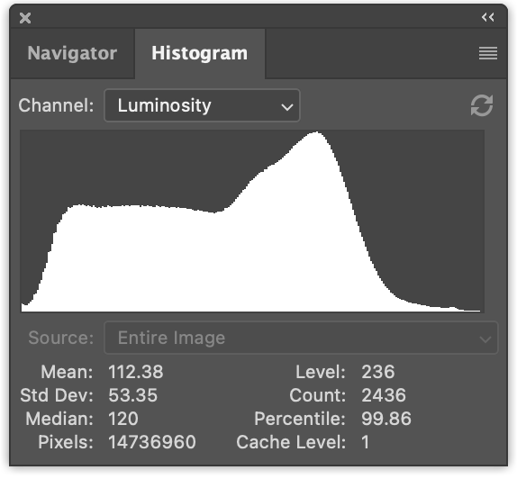

この記事は、コンピュートシェーダーの基本に関する記事の続きです。
これは2部構成の長い記事になり、物事を最適化するために多くのステップを踏みます。この最適化により物事は高速になりますが、残念ながら出力は結果を変更しないため、各ステップは前のステップと同じように見えます。
さらに、速度とタイミングについて言及しますが、タイミングを行うためのコードを追加すると、記事と例がさらに長くなるため、タイミングについては別の記事に譲り、これらの記事では、私自身のタイミングについて言及し、実行可能な例をいくつか提供します。この記事がコンピュートシェーダーを作成する1つの例になることを願っています。
画像ヒストグラムとは、画像内のすべてのピクセルをその値またはその値の何らかの尺度で合計するものです。
たとえば、この6x7の画像です。
これらの色があります。
各色について、輝度レベル（どれだけ明るいか）を計算できます。オンラインで調べたところ、この式が見つかりました。
// 輝度に対して0から1の値を返します。
// ここで、r、g、bはそれぞれ0から1の範囲です。
function srgbLuminance(r, g, b) {
// from: https://www.w3.org/WAI/GL/wiki/Relative_luminance
return r * 0.2126 +
g * 0.7152 +
b * 0.0722;
}
これを使用して、各値を輝度レベルに変換できます。
「ビン」の数を決めることができます。3つのビンに決めましょう。次に、それらの輝度値を量子化して「ビン」を選択し、各ビンに収まるピクセルの数を合計できます。
最後に、それらのビンの値をグラフ化できます。
グラフは、中程度の明るさのピクセル（🟥 16）よりも暗いピクセル（🟦 18）が多く、明るいピクセル（🟨 8）はさらに少ないことを示しています。これは3つのビンだけではそれほど面白くありません。しかし、このような写真を撮ると
ピクセルの輝度値を数え上げ、たとえば256個のビンに分け、グラフ化すると、このようになります。

画像ヒストグラムの計算は非常に簡単です。まずJavaScriptでやってみましょう。
ImageDataオブジェクトが与えられた場合に、ヒストグラムを生成する関数を作成しましょう。
function computeHistogram(numBins, imgData) {
const {width, height, data} = imgData;
const bins = new Array(numBins).fill(0);
for (let y = 0; y < height; ++y) {
for (let x = 0; x < width; ++x) {
const offset = (y * width + x) * 4;
const r = data[offset + 0] / 255;
const g = data[offset + 1] / 255;
const b = data[offset + 2] / 255;
const v = srgbLuminance(r, g, b);
const bin = Math.min(numBins - 1, v * numBins) | 0;
++bins[bin];
}
}
return histogram;
}
上記のように、各ピクセルをウォークスルーします。画像からr、g、bを抽出します。輝度値を計算します。それをビンインデックスに変換し、そのビンのカウントをインクリメントします。
そのデータが得られたら、グラフ化できます。メインのグラフ関数は、各ビンに対して何らかのスケールとキャンバスの高さで乗算された線を描画するだけです。
ctx.fillStyle = '#fff';
for (let x = 0; x < numBins; ++x) {
const v = histogram[x] * scale * height;
ctx.fillRect(x, height - v, 1, v);
}
スケールを決定するのは個人的な選択のようです。スケールを選択するための良い公式を知っている場合は、コメントを残してください。😅 ネットで調べたところ、スケールについてこの公式を思いつきました。
const numBins = histogram.length; const max = Math.max(...histogram); const scale = Math.max(1 / max, 0.2 * numBins / numEntries);
ここで、numEntriesは画像内のピクセルの総数（つまり、幅*高さ）であり、基本的には、最も値の多いビンがグラフの上部に触れるようにスケーリングしようとしていますが、そのビンが大きすぎる場合は、見栄えの良いグラフを生成するように見える比率があります。
すべてをまとめると、2Dキャンバスを作成して描画します。
function drawHistogram(histogram, numEntries, height = 100) {
const numBins = histogram.length;
const max = Math.max(...histogram);
const scale = Math.max(1 / max, 0.2 * numBins / numEntries);
const canvas = document.createElement('canvas');
canvas.width = numBins;
canvas.height = height;
document.body.appendChild(canvas);
const ctx = canvas.getContext('2d');
ctx.fillStyle = '#fff';
for (let x = 0; x < numBins; ++x) {
const v = histogram[x] * scale * height;
ctx.fillRect(x, height - v, 1, v);
}
}
次に、画像を読み込む必要があります。画像の読み込みに関する記事で書いたコードを使用します。
async function main() {
const imgBitmap = await loadImageBitmap('resources/images/pexels-francesco-ungaro-96938-mid.jpg');
画像からデータを取得する必要があります。そのためには、画像を2Dキャンバスに描画し、getImageDataを使用します。
function getImageData(img) {
const canvas = document.createElement('canvas');
// キャンバスを画像と同じサイズにします
canvas.width = img.naturalWidth;
canvas.height = img.naturalHeight;
const ctx = canvas.getContext('2d');
ctx.drawImage(img, 0, 0);
return ctx.getImageData(0, 0, canvas.width, canvas.height);
}
また、ImageBitmapを表示する関数も作成します。
function showImageBitmap(imageBitmap) {
const canvas = document.createElement('canvas');
canvas.width = imageBitmap.width;
canvas.height = imageBitmap.height;
const bm = canvas.getContext('bitmaprenderer');
bm.transferFromImageBitmap(imageBitmap);
document.body.appendChild(canvas);
}
画像が大きすぎないようにCSSを追加し、背景色を指定して描画する必要がないようにしましょう。
canvas {
display: block;
max-width: 256px;
border: 1px solid #888;
background-color: #333;
}
そして、上記で書いた関数を呼び出すだけです。
async function main() {
const imgBitmap = await loadImageBitmap('resources/images/pexels-francesco-ungaro-96938-mid.jpg');
const imgData = getImageData(imgBitmap);
const numBins = 256;
const histogram = computeHistogram(numBins, imgData);
showImageBitmap(imgBitmap);
const numEntries = imgData.width * imgData.height;
drawHistogram(histogram, numEntries);
}
そして、これが画像ヒストグラムです。
JavaScriptコードが何をしているのか、簡単に理解できたことを願っています。WebGPUに変換しましょう！
最も明白な解決策から始めましょう。JavaScriptのcomputeHistogram関数をWGSLに直接変換します。
輝度関数は非常に簡単です。もう一度JavaScriptを示します。
// 輝度に対して0から1の値を返します。
// ここで、r、g、bはそれぞれ0から1の範囲です。
function srgbLuminance(r, g, b) {
// from: https://www.w3.org/WAI/GL/wiki/Relative_luminance
return r * 0.2126 +
g * 0.7152 +
b * 0.0722;
}
そして、これが対応するWGSLです。
// from: https://www.w3.org/WAI/GL/wiki/Relative_luminance
const kSRGBLuminanceFactors = vec3f(0.2126, 0.7152, 0.0722);
fn srgbLuminance(color: vec3f) -> f32 {
return saturate(dot(color, kSRGBLuminanceFactors));
}
dot関数は「ドット積」の略で、1つのベクトルの各要素を別のベクトルの対応する要素で乗算し、その結果を加算します。上記のようなvec3fの場合、次のように定義できます。
fn dot(a: vec3f, b: vec3f) -> f32 {
return a.x * b.x + a.y * b.y + a.z * b.z;
}
これはJavaScriptにあったものです。主な違いは、WGSLでは個々のチャンネルではなく、色をvec3fとして渡すことです。
ヒストグラムを計算する主要部分については、もう一度JavaScriptを示します。
function computeHistogram(numBins, imgData) {
const {width, height, data} = imgData;
const bins = new Array(numBins).fill(0);
for (let y = 0; y < height; ++y) {
for (let x = 0; x < width; ++x) {
const offset = (y * width + x) * 4;
const r = data[offset + 0] / 255;
const g = data[offset + 1] / 255;
const b = data[offset + 2] / 255;
const v = srgbLuminance(r, g, b);
const bin = Math.min(numBins - 1, v * numBins) | 0;
++bins[bin];
}
}
return bins;
}
これが対応するWGSLです。
@group(0) @binding(0) var<storage, read_write> bins: array<u32>;
@group(0) @binding(1) var ourTexture: texture_2d<f32>;
// from: https://www.w3.org/WAI/GL/wiki/Relative_luminance
const kSRGBLuminanceFactors = vec3f(0.2126, 0.7152, 0.0722);
fn srgbLuminance(color: vec3f) -> f32 {
return saturate(dot(color, kSRGBLuminanceFactors));
}
@compute @workgroup_size(1) fn cs() {
let size = textureDimensions(ourTexture, 0);
let numBins = f32(arrayLength(&bins));
let lastBinIndex = u32(numBins - 1);
for (var y = 0u; y < size.y; y++) {
for (var x = 0u; x < size.x; x++) {
let position = vec2u(x, y);
let color = textureLoad(ourTexture, position, 0);
let v = srgbLuminance(color.rgb);
let bin = min(u32(v * numBins), lastBinIndex);
bins[bin] += 1;
}
}
}
上記では、あまり変更はありません。JavaScriptでは、imgDataからデータ、幅、高さを取得します。WGSLでは、textureDimensions関数に渡すことで、テクスチャから幅と高さを取得します。
let size = textureDimensions(ourTexture, 0);
textureDimensionsは、テクスチャとミップレベル（上記の0）を受け取り、そのテクスチャのミップレベルのサイズを返します。
JavaScriptで行ったように、テクスチャのすべてのピクセルをループします。
for (var y = 0u; y < size.y; y++) {
for (var x = 0u; x < size.x; x++) {
textureLoadを呼び出して、テクスチャから色を取得します。
let position = vec2u(x, y);
let color = textureLoad(ourTexture, position, 0);
textureLoadは、テクスチャの単一のミップレベルから単一のテクセルを返します。テクスチャ、vec2uテクセル位置、ミップレベル（0）を受け取ります。
輝度値を計算し、それをビンインデックスに変換して、そのビンをインクリメントします。
let position = vec2u(x, y);
let color = textureLoad(ourTexture, position, 0);
+ let v = srgbLuminance(color.rgb);
+ let bin = min(u32(v * numBins), lastBinIndex);
+ bins[bin] += 1;
コンピュートシェーダーができたので、それを使用しましょう。
かなり標準的な初期化コードがあります。
async function main() {
const adapter = await navigator.gpu?.requestAdapter();
const device = await adapter?.requestDevice();
if (!device) {
fail('WebGPUをサポートするブラウザが必要です');
return;
}
次に、シェーダーを作成します。
const module = device.createShaderModule({
label: 'histogram shader',
code: /* wgsl */ `
@group(0) @binding(0) var<storage, read_write> bins: array<u32>;
@group(0) @binding(1) var ourTexture: texture_2d<f32>;
// from: https://www.w3.org/WAI/GL/wiki/Relative_luminance
const kSRGBLuminanceFactors = vec3f(0.2126, 0.7152, 0.0722);
fn srgbLuminance(color: vec3f) -> f32 {
return saturate(dot(color, kSRGBLuminanceFactors));
}
@compute @workgroup_size(1) fn cs() {
let size = textureDimensions(ourTexture, 0);
let numBins = f32(arrayLength(&bins));
let lastBinIndex = u32(numBins - 1);
for (var y = 0u; y < size.y; y++) {
for (var x = 0u; x < size.x; x++) {
let position = vec2u(x, y);
let color = textureLoad(ourTexture, position, 0);
let v = srgbLuminance(color.rgb);
let bin = min(u32(v * numBins), lastBinIndex);
bins[bin] += 1;
}
}
}
`,
});
シェーダーを実行するためのコンピュートパイプラインを作成します。
const pipeline = device.createComputePipeline({
label: 'histogram',
layout: 'auto',
compute: {
module,
},
});
画像を読み込んだ後、テクスチャを作成してデータをコピーする必要があります。テクスチャへの画像の読み込みに関する記事で書いたcreateTextureFromSource関数を使用します。
const imgBitmap = await loadImageBitmap('resources/images/pexels-francesco-ungaro-96938-mid.jpg');
const texture = createTextureFromSource(device, imgBitmap);
シェーダーが色の値を合計するためのストレージバッファを作成する必要があります。
const numBins = 256;
const histogramBuffer = device.createBuffer({
size: numBins * 4, // 256エントリ * 4バイト/u32
usage: GPUBufferUsage.STORAGE | GPUBufferUsage.COPY_SRC,
});
そして、結果を取得して描画するためのバッファです。
const resultBuffer = device.createBuffer({
size: histogramBuffer.size,
usage: GPUBufferUsage.COPY_DST | GPUBufferUsage.MAP_READ,
});
テクスチャとヒストグラムバッファをパイプラインに渡すためのバインドグループが必要です。
const bindGroup = device.createBindGroup({
label: 'histogram bindGroup',
layout: pipeline.getBindGroupLayout(0),
entries: [
{ binding: 0, resource: histogramBuffer },
{ binding: 1, resource: texture },
],
});
コンピュートシェーダーを実行するコマンドを設定できるようになりました。
const encoder = device.createCommandEncoder({ label: 'histogram encoder' });
const pass = encoder.beginComputePass();
pass.setPipeline(pipeline);
pass.setBindGroup(0, bindGroup);
pass.dispatchWorkgroups(1);
pass.end();
ヒストグラムバッファを結果バッファにコピーする必要があります。
const encoder = device.createCommandEncoder({ label: 'histogram encoder' });
const pass = encoder.beginComputePass();
pass.setPipeline(pipeline);
pass.setBindGroup(0, bindGroup);
pass.dispatchWorkgroups(1);
pass.end();
+ encoder.copyBufferToBuffer(histogramBuffer, 0, resultBuffer, 0, resultBuffer.size);
そして、コマンドを実行します。
const encoder = device.createCommandEncoder({ label: 'histogram encoder' });
const pass = encoder.beginComputePass();
pass.setPipeline(pipeline);
pass.setBindGroup(0, bindGroup);
pass.dispatchWorkgroups(1);
pass.end();
encoder.copyBufferToBuffer(histogramBuffer, 0, resultBuffer, 0, resultBuffer.size);
+ const commandBuffer = encoder.finish();
+ device.queue.submit([commandBuffer]);
最後に、結果バッファからデータを取得し、既存の関数に渡してヒストグラムを描画できます。
await resultBuffer.mapAsync(GPUMapMode.READ); const histogram = new Uint32Array(resultBuffer.getMappedRange()); showImageBitmap(imgBitmap); const numEntries = texture.width * texture.height; drawHistogram(histogram, numEntries); resultBuffer.unmap();
そして、それは機能するはずです。
結果を計時したところ、これはJavaScriptバージョンよりも約30倍遅いことがわかりました!!! 😱😱😱 (YMMV)。
どうしたのでしょうか？上記の解決策は単一のループで設計し、サイズ1の単一のワークグループ呼び出しを使用しました。つまり、GPUの単一の「コア」のみがヒストグラムの計算に使用されたということです。GPUコアは一般的にCPUコアほど高速ではありません。CPUコアには、速度を上げるための大量の追加回路があります。GPUは大規模な並列化から速度を得ますが、設計をより単純に保つ必要があります。上記のシェーダーでは、並列化を利用しませんでした。
小さなサンプルテクスチャを使用して何が起こっているかの図を次に示します。
図とシェーダーの違い
これらの図は、シェーダーを完全に表現したものではありません。
- シェーダーには256個のビンがありますが、3つのビンしか表示されていません。
- コードは簡略化されています。
- ▢はテクセルカラーです。
- ◯は輝度として表されるビンの選択です。
- 多くのものが省略されています。
wid=workgroup_idgid=global_invocation_idlid=local_invocation_idourTex=ourTexturetexLoad=textureLoad- など…
これらの変更の多くは、多くの詳細を表示しようとするとスペースが限られているためです。この最初の例では単一の呼び出しを使用しますが、進むにつれて、より少ないスペースにより多くの情報を詰め込む必要があります。図が理解を助けるものであり、物事をより混乱させるものではないことを願っています。😅
単一のGPU呼び出しがCPUよりも遅いことを考えると、アプローチを並列化する方法を見つける必要があります。
これを高速化する最も簡単で明白な方法は、ピクセルごとに1つのワークグループを使用することです。上記のコードにはforループがあります。
for (y) {
for (x) {
...
}
}
代わりにglobal_invocation_idを入力として使用し、すべてのピクセルを個別の呼び出しで処理するようにコードを変更できます。
シェーダーに必要な変更は次のとおりです。
@group(0) @binding(0) var<storage, read_write> bins: array<vec4u>;
@group(0) @binding(1) var ourTexture: texture_2d<f32>;
// from: https://www.w3.org/WAI/GL/wiki/Relative_luminance
const kSRGBLuminanceFactors = vec3f(0.2126, 0.7152, 0.0722);
fn srgbLuminance(color: vec3f) -> f32 {
return saturate(dot(color, kSRGBLuminanceFactors));
}
@compute @workgroup_size(1, 1, 1)
-fn cs() {
+fn cs(@builtin(global_invocation_id) global_invocation_id: vec3u) {
- let size = textureDimensions(ourTexture, 0);
let numBins = f32(arrayLength(&bins));
let lastBinIndex = u32(numBins - 1);
- for (var y = 0u; y < size.y; y++) {
- for (var x = 0u; x < size.x; x++) {
- let position = vec2u(x, y);
+ let position = global_invocation_id.xy;
let color = textureLoad(ourTexture, position, 0);
let v = srgbLuminance(color.rgb);
let bin = min(u32(v * numBins), lastBinIndex);
bins[bin] += 1;
- }
- }
}
ご覧のとおり、ループをなくし、代わりに@builtin(global_invocation_id)値を使用して、各ワークグループが単一のピクセルを担当するようにしました。理論的には、これによりすべてのピクセルを並列に処理できることになります。画像は2448×1505で、ほぼ370万ピクセルなので、並列化の機会はたくさんあります。
必要なもう1つの変更は、実際にピクセルごとに1つのワークグループを実行することです。
const encoder = device.createCommandEncoder({ label: 'histogram encoder' });
const pass = encoder.beginComputePass();
pass.setPipeline(pipeline);
pass.setBindGroup(0, bindGroup);
- pass.dispatchWorkgroups(1);
+ pass.dispatchWorkgroups(texture.width, texture.height);
pass.end();
実行中です。
何が問題なのでしょうか？なぜこのヒストグラムは前のヒストグラムと一致せず、合計も一致しないのでしょうか？注：お使いのコンピューターでは、私とは異なる結果が得られる場合があります。私の場合、これは前のバージョンのヒストグラムが上で、新しいバージョンの4つの結果が下です。


新しいバージョンでは、一貫性のない結果が得られます（少なくとも私のマシンでは）。
何が起こったのでしょうか？
これは、前の記事で述べた古典的な競合状態です。
シェーダーのこの行
bins[bin] += 1;
は、実際にはこれに変換されます。
let value = bins[bin]; value = value + 1 bins[bin] = value;
2つ以上の呼び出しが並列に実行され、同じbin値を持つとどうなるでしょうか？
bin = 1でbins[1] = 3の2つの呼び出しを想像してみてください。並列に実行されると、両方の呼び出しが3をロードし、両方の呼び出しが4を書き込みますが、正しい答えは5です。
| 呼び出し1 | 呼び出し2 |
|---|---|
| value = bins[bin] // 3をロード | value = bins[bin] // 3をロード |
| value = value + 1 // 1を追加 | value = value + 1 // 1を追加 |
| bins[bin] = value // 4を格納 | bins[bin] = value // 4を格納 |
下の図で問題を視覚的に確認できます。いくつかの呼び出しがビンの現在の値を取得し、それに1を加えて元に戻すのがわかります。それぞれが、別の呼び出しが同じビンを同時に読み書きしていることに気づいていません。
WGSLには、この問題を解決するための特別な「アトミック」命令があります。この場合、atomicAddを使用できます。atomicAddは、加算を「アトミック」にします。つまり、ロード->加算->格納の3つの操作ではなく、3つの操作すべてが一度に「アトミックに」行われます。これにより、2つ以上の呼び出しが同時に値を更新するのを効果的に防ぎます。
アトミック関数には、i32またはu32でのみ機能し、データ自体がatomic型である必要があるという要件があります。
シェーダーへの変更は次のとおりです。
-@group(0) @binding(0) var<storage, read_write> bins: array<u32>;
+@group(0) @binding(0) var<storage, read_write> bins: array<atomic<u32>>;
@group(0) @binding(1) var ourTexture: texture_2d<f32>;
const kSRGBLuminanceFactors = vec3f(0.2126, 0.7152, 0.0722);
fn srgbLuminance(color: vec3f) -> f32 {
return saturate(dot(color, kSRGBLuminanceFactors));
}
@compute @workgroup_size(1, 1, 1)
fn cs(@builtin(global_invocation_id) global_invocation_id: vec3u) {
let numBins = f32(arrayLength(&bins));
let lastBinIndex = u32(numBins - 1);
let position = global_invocation_id.xy;
let color = textureLoad(ourTexture, position, 0);
let v = srgbLuminance(color.rgb);
let bin = min(u32(v * numBins), lastBinIndex);
- bins[bin] += 1;
+ atomicAdd(&bins[bin], 1u);
}
これで、ピクセルごとに1つのワークグループ呼び出しを使用するコンピュートシェーダーが機能します！
残念ながら、新しい問題があります。atomicAddは、他の呼び出しが同じビンを同時に更新するのを効果的にブロックする必要があります。ここで問題を確認できます。下の図は、atomicAddを3つの操作として示していますが、呼び出しがatomicAddを実行している場合、別の呼び出しが完了するまで待機する必要があるように「ビンをロック」します。
図では、呼び出しがビンをロックしている場合、呼び出しからビンの色の線が表示されます。そのビンがロック解除されるのを待っている呼び出しには、停止標識🛑が表示されます。
私のマシンでは、この新しいバージョンはJavaScriptよりも約4倍高速に実行されますが、YMMVです。
もっと速くできますか？前の記事で述べたように、「ワークグループ」は、GPUに実行を依頼できる最小の作業単位です。シェーダーモジュールを作成するときに3次元でワークグループのサイズを定義し、dispatchWorkgroupsを呼び出してこれらのワークグループを多数実行します。
ワークグループは、内部ストレージを共有し、ワークグループ自体内でそのストレージを調整できます。その事実をどのように利用できるでしょうか？
これを試してみましょう。ワークグループのサイズを256x1（ワークグループあたり256回の呼び出し）にします。各呼び出しが画像の256x1セクションで機能するようにします。これは、合計でMath.ceil(texture.width / 256) * texture.heightのワークグループを持つことを意味します。2448×1505の画像の場合、10 x 1505または15050のワークグループになります。
ワークグループ内の呼び出しにワークグループメモリを使用して、輝度値をビンに合計させます。
最後に、ワークグループのワークグループメモリを独自の「チャンク」にコピーします。そうすれば、他のワークグループと調整する必要がなくなります。完了したら、別のコンピュートシェーダーを実行してチャンクを合計します。
シェーダーを編集しましょう。まず、binsをstorage型からworkgroup型に変更して、同じワークグループ内の呼び出しとのみ共有されるようにします。
-@group(0) @binding(0) var<storage, read_write> bins: array<atomic<u32>>; +const chunkWidth = 256; +const chunkHeight = 1; +const chunkSize = chunkWidth * chunkHeight; +var<workgroup> bins: array<atomic<u32>, chunkSize>;
上記では、簡単に変更できるようにいくつかの定数を宣言しました。
次に、すべてのチャンク用のストレージが必要です。
+@group(0) @binding(0) var<storage, read_write> chunks: array<array<u32, chunkSize>>;
@group(0) @binding(1) var ourTexture: texture_2d<f32>;
const kSRGBLuminanceFactors = vec3f(0.2126, 0.7152, 0.0722);
fn srgbLuminance(color: vec3f) -> f32 {
return saturate(dot(color, kSRGBLuminanceFactors));
}
定数を使用してワークグループのサイズを定義できます。
-@compute @workgroup_size(1, 1, 1) +@compute @workgroup_size(chunkWidth, chunkHeight, 1)
ビンをインクリメントする主要部分は、前のシェーダーと非常によく似ています。
fn cs(@builtin(global_invocation_id) global_invocation_id: vec3u) {
let size = textureDimensions(ourTexture, 0);
let position = global_invocation_id.xy;
+ if (all(position < size)) {
- let numBins = f32(arrayLength(&bins));
+ let numBins = f32(chunkSize);
let lastBinIndex = u32(numBins - 1);
let color = textureLoad(ourTexture, position, 0);
let v = srgbLuminance(color.rgb);
let bin = min(u32(v * numBins), lastBinIndex);
atomicAdd(&bins[bin], 1u);
}
チャンクサイズはシェーダーにハードコーディングされているため、テクスチャ外のピクセルで作業したくありません。たとえば、画像が300ピクセル幅の場合、最初のワークグループはピクセル0から255で作業します。2番目のワークグループはピクセル256から511で作業しますが、ピクセル299までしか作業する必要はありません。これがif(all(position < size))の役割です。positionとsizeは両方ともvec2uなので、position < sizeは2つのブール値、つまりvec2<bool>を生成します。all関数は、すべての入力がtrueの場合にtrueを返します。したがって、コードはposition.x < size.xとposition.y < size.yの場合にのみif内に入ります。
numBinsについては、チャンクサイズに定義したのと同じ数のビンがあります。var<storage>で行ったようにvar<workgroup>にバッファを渡さないため、サイズを検索できなくなりました。そのサイズは、シェーダーモジュールを作成するときに定義されます。
最後に、シェーダーの最も異なる部分です。
workgroupBarrier(); let chunksAcross = (size.x + chunkWidth - 1) / chunkWidth; let chunkDim = vec2u(chunkWidth, chunkHeight); let chunkPos = global_invocation_id.xy / chunkDim; let chunk = chunkPos.y * chunksAcross + chunkPos.x; let binPos = global_invocation_id.xy % chunkDim; let bin = binPos.y * chunkWidth + binPos.x; chunks[chunk][bin] = atomicLoad(&bins[bin]); }
この部分は、各呼び出しが1つのビンを、このワークグループが作業している特定のチャンクの対応するビンにコピーするだけです。global_invocation_idをchunkPosとbinPosの両方に変換するための計算の一部です。これらの値は、事実上workgroup_idとlocal_invocation_idなので、このコードを次のように簡略化できます。
workgroupBarrier(); let chunksAcross = (size.x + chunkWidth - 1) / chunkWidth; let chunk = workgroup_id.y * chunksAcross + workgroup_id.x; let bin = local_invocation_id.y * chunkWidth + local_invocation_id.x; chunks[chunk][bin] = atomicLoad(&bins[bin]); }
次に、workgroup_idとlocal_invocation_idをシェーダー関数の入力として追加する必要があります。
-fn cs(@builtin(global_invocation_id) global_invocation_id: vec3u) {
+fn cs(
+ @builtin(global_invocation_id) global_invocation_id: vec3u,
+ @builtin(workgroup_id) workgroup_id: vec3u,
+ @builtin(local_invocation_id) local_invocation_id: vec3u,
+) {
...
workgroupBarrier()は、事実上、「このワークグループのすべての呼び出しがこのポイントに到達するまでここで停止する」と言っています。これが必要なのは、各呼び出しがbinsの異なる要素を更新しているためですが、その後、各呼び出しはbinsから1つの要素のみをchunksの1つの対応する要素にコピーするため、他のすべての呼び出しが完了していることを確認する必要があります。
別の言い方をすれば、どの呼び出しも、テクスチャから読み取る色に応じてbinsの任意の要素をatomicAddできます。しかし、local_invocation_id = 3,0のみがbin[3]をchunks[chunk][3]にコピーするため、他のすべての呼び出しがbin[3]を更新する機会を持つまで待機する必要があります。
すべてをまとめると、これが新しいシェーダーです。
const chunkWidth = 256;
const chunkHeight = 1;
const chunkSize = chunkWidth * chunkHeight;
var<workgroup> bins: array<atomic<u32>, chunkSize>;
@group(0) @binding(0) var<storage, read_write> chunks: array<array<u32, chunkSize>>;
@group(0) @binding(1) var ourTexture: texture_2d<f32>;
const kSRGBLuminanceFactors = vec3f(0.2126, 0.7152, 0.0722);
fn srgbLuminance(color: vec3f) -> f32 {
return saturate(dot(color, kSRGBLuminanceFactors));
}
@compute @workgroup_size(chunkWidth, chunkHeight, 1)
fn cs(
@builtin(global_invocation_id) global_invocation_id: vec3u,
@builtin(workgroup_id) workgroup_id: vec3u,
@builtin(local_invocation_id) local_invocation_id: vec3u,
) {
let size = textureDimensions(ourTexture, 0);
let position = global_invocation_id.xy;
if (all(position < size)) {
let numBins = f32(chunkSize);
let lastBinIndex = u32(numBins - 1);
let color = textureLoad(ourTexture, position, 0);
let v = srgbLuminance(color.rgb);
let bin = min(u32(v * numBins), lastBinIndex);
atomicAdd(&bins[bin], 1u);
}
workgroupBarrier();
let chunksAcross = (size.x + chunkWidth - 1) / chunkWidth;
let chunk = workgroup_id.y * chunksAcross + workgroup_id.x;
let bin = local_invocation_id.y * chunkWidth + local_invocation_id.x;
chunks[chunk][bin] = atomicLoad(&bins[bin]);
}
もう1つできることは、chunkWidthとchunkHeightをハードコーディングするのではなく、JavaScriptから次のように渡すことです。
+ const k = {
+ chunkWidth: 256,
+ chunkHeight: 1,
+ };
+ const sharedConstants = Object.entries(k)
+ .map(([k, v]) => `const ${k} = ${v};`)
+ .join('\n');
const histogramChunkModule = device.createShaderModule({
label: 'histogram chunk shader',
code: /* wgsl */ `
- const chunkWidth = 256;
- const chunkHeight = 1;
+ ${sharedConstants}
const chunkSize = chunkWidth * chunkHeight;
var<workgroup> bins: array<atomic<u32>, chunkSize>;
@group(0) @binding(0) var<storage, read_write> chunks: array<array<u32, chunkSize>>;
@group(0) @binding(1) var ourTexture: texture_2d<f32>;
...
`,
});
このシェーダーを実行すると、次のようになります。
上記のように、各ワークグループは1チャンク分のピクセルを読み取り、それに応じてビンを更新します。以前と同様に、2つの呼び出しが同じビンを更新する必要がある場合、そのうちの1つは待機する必要があります🛑。その後、それらはすべてworkgroupBarrier🚧で互いに待機します。その後、各呼び出しは、担当するビンを、作業しているチャンクの対応するビンにコピーします。
すべてのピクセルの輝度値がカウントされましたが、答えを得るにはビンを合計する必要があります。それを実行するコンピュートシェーダーを作成しましょう。ビンごとに1つの呼び出しを行います。各呼び出しは、各チャンクの同じビンのすべての値を合計し、その結果を最初のチャンクに書き込みます。
コードは次のとおりです。
const chunkWidth = 256;
const chunkHeight = 1;
const chunkSize = chunkWidth * chunkHeight;
@group(0) @binding(0) var<storage, read_write> chunks: array<array<u32, chunkSize>>;
@compute @workgroup_size(chunkSize, 1, 1)
fn cs(@builtin(local_invocation_id) local_invocation_id: vec3u) {
var sum = u32(0);
let numChunks = arrayLength(&chunks);
for (var i = 0u; i < numChunks; i++) {
sum += chunks[i][local_invocation_id.x];
}
chunks[0][local_invocation_id.x] = sum;
}
そして、以前と同様に、chunkWidthとchunkHeightを挿入できます。
const chunkSumModule = device.createShaderModule({
label: 'chunk sum shader',
code: /* wgsl */ `
* ${sharedConstants}
const chunkSize = chunkWidth * chunkHeight;
@group(0) @binding(0) var<storage, read_write> chunks: array<array<u32, chunkSize>>;
@compute @workgroup_size(chunkSize, 1, 1)
...
}
`,
});
このシェーダーは、事実上、次のように機能します。
これらの2つのシェーダーができたので、それらを使用するようにコードを更新しましょう。両方のシェーダーのパイプラインを作成する必要があります。
- const pipeline = device.createComputePipeline({
- label: 'histogram',
- layout: 'auto',
- compute: {
- module,
-- },
- });
+ const histogramChunkPipeline = device.createComputePipeline({
+ label: 'histogram',
+ layout: 'auto',
+ compute: {
+ module: histogramChunkModule,
++ },
+ });
+
+ const chunkSumPipeline = device.createComputePipeline({
+ label: 'chunk sum',
+ layout: 'auto',
+ compute: {
+ module: chunkSumModule,
++ },
+ });
すべてのチャンクに十分な大きさのストレージバッファを作成する必要があるため、画像全体をカバーするために必要なチャンクの数を計算します。
const imgBitmap = await loadImageBitmap('resources/images/pexels-francesco-ungaro-96938-mid.jpg');
const texture = createTextureFromSource(device, imgBitmap);
- const numBins = 256;
- const histogramBuffer = device.createBuffer({
- size: numBins * 4, // 256エントリ * 4バイト/u32
- usage: GPUBufferUsage.STORAGE | GPUBufferUsage.COPY_SRC,
- });
+ const chunkSize = k.chunkWidth * k.chunkHeight;
+ const chunksAcross = Math.ceil(texture.width / k.chunkWidth);
+ const chunksDown = Math.ceil(texture.height / k.chunkHeight);
+ const numChunks = chunksAcross * chunksDown;
+ const chunksBuffer = device.createBuffer({
+ size: numChunks * chunkSize * 4, // 4バイト/u32
+ usage: GPUBufferUsage.STORAGE | GPUBufferUsage.COPY_SRC,
+ });
結果を読み取るための結果バッファはまだ必要ですが、前のバッファと同じサイズではありません。
const resultBuffer = device.createBuffer({
- size: histogramBuffer.size,
+ size: chunkSize * 4, // 4バイト/u32
usage: GPUBufferUsage.COPY_DST | GPUBufferUsage.MAP_READ,
});
各パスにバインドグループが必要です。1つはテクスチャとチャンクを最初のシェーダーに渡し、もう1つはチャンクを2番目のシェーダーに渡します。
- const bindGroup = device.createBindGroup({
+ const histogramBindGroup = device.createBindGroup({
label: 'histogram bindGroup',
layout: histogramChunkPipeline.getBindGroupLayout(0),
entries: [
- { binding: 0, resource: histogramBuffer },
+ { binding: 0, resource: chunksBuffer },
{ binding: 1, resource: texture },
],
});
const chunkSumBindGroup = device.createBindGroup({
label: 'sum bindGroup',
layout: chunkSumPipeline.getBindGroupLayout(0),
entries: [
{ binding: 0, resource: chunksBuffer },
],
});
最後に、シェーダーを実行できます。まず、ピクセルを読み取ってビンに分類する部分です。チャンクごとに1つのワークグループをディスパッチします。
const encoder = device.createCommandEncoder({ label: 'histogram encoder' });
const pass = encoder.beginComputePass();
+ // 各領域のヒストグラムを作成します
- pass.setPipeline(pipeline);
- pass.setBindGroup(0, bindGroup);
- pass.dispatchWorkgroups(texture.width, texture.height);
+ pass.setPipeline(histogramChunkPipeline);
+ pass.setBindGroup(0, histogramBindGroup);
+ pass.dispatchWorkgroups(chunksAcross, chunksDown);
次に、チャンクを合計するシェーダーを実行する必要があります。これは、ビンごとに1つの呼び出し（256回の呼び出し）を使用する1つのワークグループだけです。
+ // 領域を合計します + pass.setPipeline(chunkSumPipeline); + pass.setBindGroup(0, chunkSumBindGroup); + pass.dispatchWorkgroups(1);
残りのコードは同じです。
私のマシンでこれを計時したところ、最初のシェーダーが0.2msで実行されるのを見てうれしく思いました！画像全体を読み取り、すべてのチャンクをあっという間に埋め尽くしました！
残念ながら、チャンクを合計する部分ははるかに時間がかかりました。11msです。これは、前のシェーダーよりも遅いです！
別のマシンでは、前の解決策は4.4msで、この新しい解決策は1.7msだったので、完全な損失ではありませんでした。
もっとうまくできますか？
上記の解決策では、単一のワークグループを使用しました。256回の呼び出しがありますが、最新のGPUには数千のコアがあり、そのうち256個しか使用していません。
試すことができる1つの手法は、リデュースと呼ばれることがあります。各ワークグループに2つのチャンクのみを追加させ、その結果をそれら2つのチャンクの最初に書き込みます。こうすることで、1000個のチャンクがある場合、500個のワークグループを使用できます。これははるかに多くの並列化です。プロセスを繰り返し、500個のチャンクを250個に、250個を125個に、125個を63個に、というように、1つのチャンクにリデュースするまで繰り返します。
1つのシェーダーのみを使用でき、チャンクを1つのチャンクにリデュースするためのストライドを渡すだけです。ストライドは、合計している2番目のチャンクに到達するために進む必要があるチャンクの数です。ストライド1を渡すと、隣接するチャンクを合計します。ストライド2を渡すと、1つおきのチャンクを合計します。など…
シェーダーへの変更は次のとおりです。
const chunkSumModule = device.createShaderModule({
label: 'chunk sum shader',
code: /* wgsl */ `
${sharedConstants}
const chunkSize = chunkWidth * chunkHeight;
+ struct Uniforms {
+ stride: u32,
+ };
@group(0) @binding(0) var<storage, read_write> chunks: array<array<vec4u, chunkSize>>;
+ @group(0) @binding(1) var<uniform> uni: Uniforms;
@compute @workgroup_size(chunkSize, 1, 1) fn cs(
@builtin(local_invocation_id) local_invocation_id: vec3u,
@builtin(workgroup_id) workgroup_id: vec3u,
) {
- var sum = u32(0);
- let numChunks = arrayLength(&chunks);
- for (var i = 0u; i < numChunks; i++) {
- sum += chunks[i][local_invocation_id.x];
- }
- chunks[0][local_invocation_id.x] = sum;
+ let chunk0 = workgroup_id.x * uni.stride * 2;
+ let chunk1 = chunk0 + uni.stride;
+
+ let sum = chunks[chunk0][local_invocation_id.x] +
+ chunks[chunk1][local_invocation_id.x];
+ chunks[chunk0][local_invocation_id.x] = sum;
}
`,
});
上記のように、workgroup_id.xと、ユニフォームとして渡すuni.strideに基づいてchunk0とchunk1を計算します。次に、2つのチャンクから2つのビンを追加し、それらを最初のビンに格納します。
正しい数の呼び出しとストライド設定で実行すると、次のようになります。注：暗くなったチャンクは、使用されなくなったチャンクです。
この新しいものを機能させるには、各ストライド値とバインドグループにユニフォームバッファを追加する必要があります。
const sumBindGroups = [];
const numSteps = Math.ceil(Math.log2(numChunks));
for (let i = 0; i < numSteps; ++i) {
const stride = 2 ** i;
const uniformBuffer = device.createBuffer({
size: 4,
usage: GPUBufferUsage.UNIFORM,
mappedAtCreation: true,
});
new Uint32Array(uniformBuffer.getMappedRange()).set([stride]);
uniformBuffer.unmap();
const chunkSumBindGroup = device.createBindGroup({
layout: chunkSumPipeline.getBindGroupLayout(0),
entries: [
{ binding: 0, resource: chunksBuffer },
{ binding: 1, resource: uniformBuffer },
],
});
sumBindGroups.push(chunkSumBindGroup);
}
次に、1つのチャンクにリデュースするまで、正しい数のディスパッチでこれらを呼び出すだけです。
- // 領域を合計します
- pass.setPipeline(chunkSumPipeline);
- pass.setBindGroup(0, chunkSumBindGroup);
- pass.dispatchWorkgroups(1);
+ // チャンクをリデュースします
+ const pass = encoder.beginComputePass();
+ pass.setPipeline(chunkSumPipeline);
+ let chunksLeft = numChunks;
+ sumBindGroups.forEach(bindGroup => {
+ pass.setBindGroup(0, bindGroup);
+ const dispatchCount = Math.floor(chunksLeft / 2);
+ chunksLeft -= dispatchCount;
+ pass.dispatchWorkgroups(dispatchCount);
+ });
このバージョンを計時したところ、テストした両方のマシンで1ms未満でした！🎉🚀
さまざまなマシンからのタイミングをいくつか示します。
ヒストグラムを計算するより高速な方法があるかもしれません。また、異なるチャンクサイズを試す方が良いかもしれません。256x1よりも16x16の方が良いかもしれません。また、ある時点でWebGPUはサブグループをサポートする可能性が高く、これはまったく別のトピックであり、さらに最適化の余地があります。
今のところ、これらの例がコンピュートシェーダーの作成と最適化の方法に関するいくつかのアイデアを提供したことを願っています。要点は次のとおりです。
var<workgroup>を使用して、ワークグループのすべての呼び出しで共有されるストレージを作成するworkgroupBarrierが解決策になる可能性があります。この点では、まあまあでした。ワークグループメモリでチャンクを計算するとき、atomicAddを介して解決した競合がまだありますが、ワークグループのbinsからchunksにコピーするときに競合はなく、chunksを最終結果の1つにリデュースするときにも競合はありません。
もう1つあるかもしれません。
GPUの個々のコアはそれほど高速ではないことを学びました。すべての速度は並列化から得られるため、並列ソリューションを設計する必要があります。
次の記事では、これらを少し調整し、JavaScriptに引き戻すのではなく、GPUを使用して結果をグラフ化するように変更します。また、画像ヒストグラムを作成したことに基づいて、リアルタイムのビデオ調整も試みます。